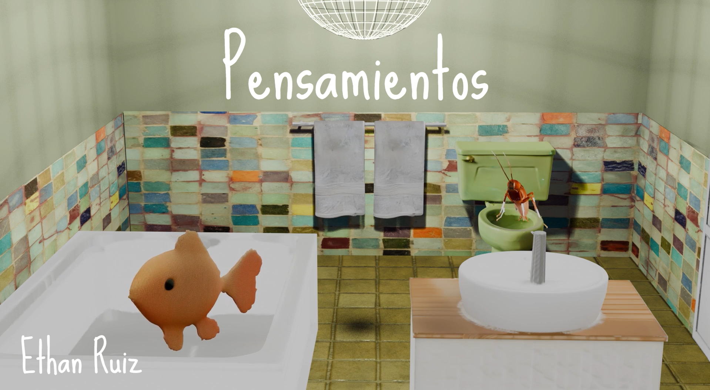

PKLS DSN
Bienvenidx a mi sitio web
Sobre mi obra
Ethan ruiz
Artista digital e ilustrador que forma parte del colectivo Metanoiart. Mis obras exploran la identidad, relaciones posthumanas y experiencias holisticas.

01
PENSAMIENTOS
Animación que explora el sobrepensamiento y la introspección mediante la relación de dos contrapartes del yo reflejado en los protagonistas.
Realizada utilizando Blender como software principal, Reaper para edición de audio y DaVinci Resolve para edición de video.

02
DULCE DE PERA
Animación que explora el duelo de la ausencia y laperdida mediante sonoridades y metaforas visuales que acompañan la narrativa del cortometraje.
Realizada utilizando Blender como software principal, Reaper para edición de audio y DaVinci Resolver para edición de video.

03
RETICULA EXPANDIDA
Exploración de la expanción reticular, mediante la intervención de la reticula colectiva y expandiendola desde la virtualidad y la fisicalidad, generando espacios de reflexión y cuestionamiento.
Realizada mediante la colectividad en un lienzo de papel, intevenida utilizando Blender, Paint, Impresión, manipulación de material y escaneo del resultado.